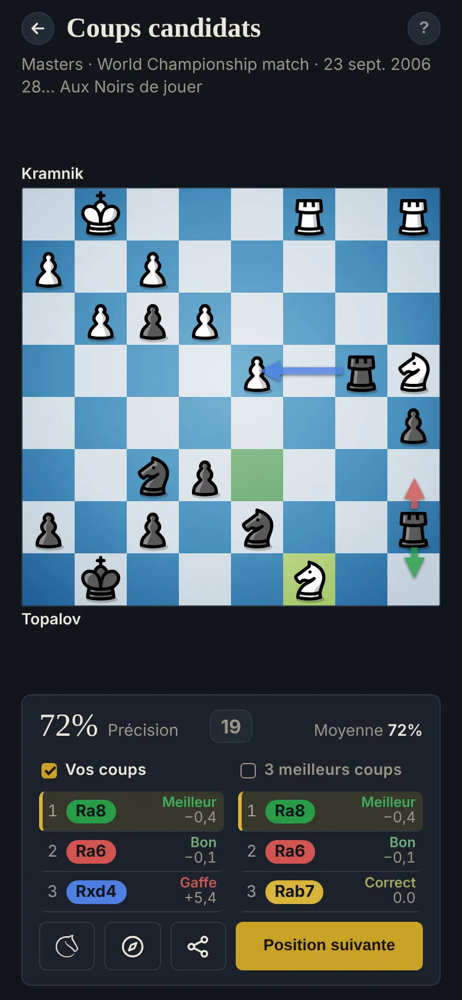

Les coups candidats aux échecs : trouver plus d'un bon coup
La plupart des erreurs viennent du premier coup qui a l'air bon. Le conseil d'Alexandre Kotov : dresser d'abord la liste de quelques options sérieuses, puis choisir.

Comment les trouver
- Les coups forcés d'abord : échecs, prises et menaces, des deux côtés.
- Puis les coups qui suivent le plan (voir la Lecture des déséquilibres).
- Vérifiez ce que chaque coup permet avant de le garder.
L'exercice
Choisissez 1 à 3 bons coups. Stockfish note chacun par rapport à son meilleur coup : Meilleur, Bon, Correct, Douteux, Erreur ou Gaffe. Douteux ou pire ne rapporte rien : dans le doute, choisissez-en moins.